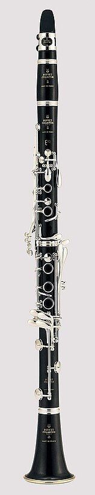
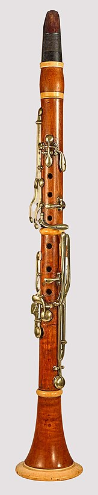

KLARNET
Klarnetin Türleri
Klarnetlerin Çok kalabalık bir ailesi vardır.Buna benzer birçok türden oluşur..
- Mi bemol küçük klarnet (yazılan notanın küçük üçlü ince sesini duyurur)
- Re küçük klarnet / Do klarnet (yazılan notanın aynısını duyurur)
- Si bemol klarnet (yazılan notanın büyük ikili kalın sesini duyurur)
- La klarnet (yazılan notanın küçük üçlü kalın sesini duyurur)
- Basset horn (Fa) (Yazılan notanın tam beşli kalın sesini duyurur)
- Mibemol alto klarnet (yazılı notanın büyük altılı kalın sesini dyurur)
- Si bemol basklarnet (yazılan notanın büyük dokuzlu kalın sesini duyurur)
- La basklarnet (yazılı notanın 1 oktav ve küçük üçlü kalın sesini duyurur)
- Si bemol kontrabasklarnet (yazılı sesin 2 oktav ve büyük ikili kalın sesini duyurur)
Bu çalgıların tümünün çalınışı aynıdır. Bir tanesinin iyi çalmayı öğrenen, çok kısa bir alışma devresinden sonra, herhangi bir diğerini çalabilir. Yalnızca dört tanesi sürekli orkestrada kullanılır.
- Mi bemol küçük klarnet
- Si bemol klarnet
- La klarnet
- Si bemol basklarnet

Bu dört çalgının da dördü birden her yapıtta kullanılmaz. Genellikle besteciler iki si bemol klarnet kullanırlar. Üçlü orkestra kuruluşu ise, bunlara bir de bas klarnet eklenir. Daha büyük orkestralarda mi bemol klarnet ve bir si bemol klarnet daha eklenebilir.
Sayfanın Başına Dön